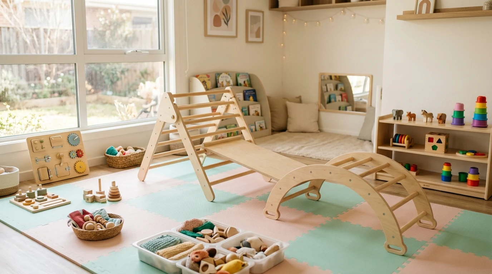
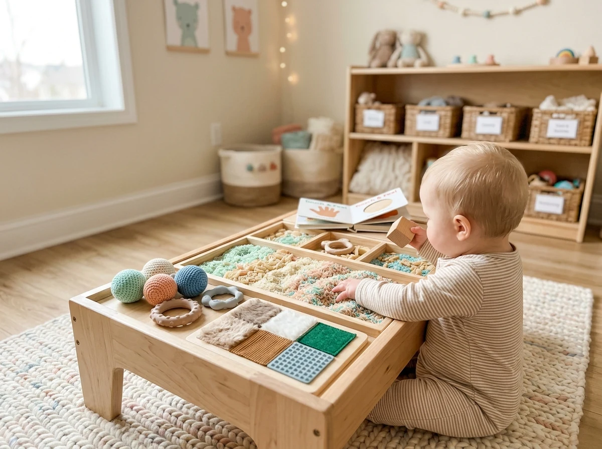

Gimnasio de Estimulación Temprana Valú
“Crecer, descubrir y conectar jugando”
Los primeros años están llenos de posibilidades. En Centro Valú creamos un espacio cálido, seguro y preparado para que niños y niñas menores de 2 años exploren, se muevan, se comuniquen y descubran el mundo a su propio ritmo, acompañados por sus familias y especialistas dedicados.

Sala de Estimulación Temprana
Materiales nobles, rampas suaves y estimulación sensorial segura
Una etapa única, una oportunidad de crecer juntos
Creemos firmemente que los niños no necesitan que les adelantemos etapas, sino que les ofrezcamos experiencias significativas, un entorno preparado para explorar y adultos amorosamente disponibles.
Enfoque Sistémico y Vincular
El bienestar del bebé está entrelazado con su familia. Mamá, papá o el cuidador participan activamente en sala fortaleciendo el apego seguro.
Aprendizaje Significativo
Inspirado en enfoques respetuosos como Montessori y Emmi Pikler, donde el movimiento libre y la curiosidad guían el aprendizaje natural.
Juego como Herramienta
El juego no es un pasatiempo: es el lenguaje primordial de la infancia para resolver desafíos motrices, cognitivos y comunicativos.
Respeto por la Individualidad
Cada niño y niña es único y su proceso también lo es. Acompañamos sin forzar tiempos, valorando cada pequeño gran avance.
“El desarrollo no se trata de llegar rápido, sino de vivir el camino con gozo, seguridad y presencia.”
Un espacio pensado en cada detalle
Área de Motricidad Libre
Rampas, arcos Pikler y superficies acolchadas

Rincón Sensorial & Táctil
Texturas naturales, madera y estímulos sonoros
Cuatro áreas, una mirada integral
Nuestro gimnasio integra las disciplinas fundamentales del desarrollo infantil con profesionales especializadas que acompañan a cada familia.
Desarrollo Motor
Favorece el control postural, el equilibrio, la coordinación y la exploración corporal libre en superficies seguras y adaptadas a su madurez motriz.
- • Gateo, arrastre y primeros pasos seguros
- • Fortalecimiento del tono muscular y esquema corporal
- • Descubrimiento de alturas y desafíos motrices respetados
Desarrollo Cognitivo
Despierta la curiosidad natural, la capacidad de atención sostenida, la resolución de pequeños desafíos espaciales y el aprendizaje a través del juego.
- • Relación causa-efecto y permanencia del objeto
- • Exploración con encajes, torres y clasificadores nobles
- • Fomento de la autonomía y toma de decisiones
Lenguaje y Comunicación
Potencia los gestos comunicativos, el contacto visual, la imitación de sonidos, la intención de interacción social y la aparición de las primeras palabras.
- • Estimulación de la intención comunicativa y balbuceo
- • Canciones, ritmos e interacción cara a cara
- • Orientación temprana en hábitos orofaciales y deglución
Desarrollo Sensorial
Experiencias ricas y graduadas para explorar el entorno desde los sentidos: texturas variadas, contrastes visuales, sonidos y propiocepción.
- • Integración sensorial y autorregulación emocional
- • Tolerancia táctil y motricidad fina temprana
- • Prevención de rechazos sensoriales o alimentarios
Terapias Grupales e Interdisciplinarias
También contamos con sesiones combinadas (TO grupal y TO + Fonoaudiología) en grupos reducidos de hasta 4 bebés.
Planes flexibles para crecer jugando
Tú eliges cómo vivir la experiencia Valú. Organiza tus sesiones según tus tiempos familiares y descubre las distintas áreas del desarrollo junto a nuestras especialistas.
Plan Descubrimiento
Una experiencia por semana para explorar, jugar y compartir.
- ✓ 1 sesión semanal
- ✓ Acceso a sala de estimulación
- ✓ Cuidador participa en sala
Plan Exploración
Dos experiencias por semana para descubrir nuevas formas de aprender.
- ✓ 2 sesiones semanales
- ✓ Combina áreas de desarrollo
- ✓ Acompañamiento especializado
Plan Crecimiento
Más oportunidades para moverse, comunicarse y compartir.
- ✓ 3 sesiones semanales
- ✓ Mayor profundidad en áreas
- ✓ Flexibilidad de horarios
Plan Integral
Una experiencia frecuente para recorrer todas las áreas.
- ✓ 4 sesiones semanales
- ✓ Cobertura interdisciplinaria completa
- ✓ Prioridad en cupos de turnos
💡 La flexibilidad también es una forma de cuidar
Puedes combinar experiencias de motricidad, desarrollo cognitivo, lenguaje y exploración sensorial según tus intereses y los cupos disponibles en cada jornada.
Preguntas Frecuentes
¿A qué edad pueden asistir los niños y niñas? ▼
El gimnasio está diseñado especialmente para niños y niñas menores de 2 años (desde los primeros meses hasta los 24 meses), etapa en la cual el desarrollo psicomotor, sensorial y vincular tiene su mayor plasticidad.
¿Necesito una evaluación previa para ingresar? ▼
No es necesario. Puedes comenzar con el plan que mejor se adapte a tu familia. Si en el transcurso de las sesiones identificamos necesidades específicas o requerimientos de apoyo en alguna área, te guiaremos hacia una evaluación profesional personalizada.
¿Puedo elegir qué especialista realizará cada sesión? ▼
Sí. Puedes organizar tus visitas y combinar sesiones según los intereses de tu bebé y los cupos disponibles de Kinesiología, Fonoaudiología, Terapia Ocupacional y Educación Parvularia.
¿Qué pasa si no puedo asistir a una sesión? ▼
Te recomendamos avisarnos con anticipación para reprogramar tu sesión dentro del mismo mes, según la disponibilidad de turnos en sala.
¿Por qué mamá, papá o cuidador participan en sala? ▼
Porque creemos que el desarrollo no ocurre de forma aislada: se construye en el vínculo cotidiano. Al estar presentes, no solo brindan seguridad emocional al bebé, sino que aprenden pautas y juegos para replicar en el hogar.
¿Comenzamos a
descubrir juntos?
Ven a conocer nuestro espacio en la nueva sucursal de Centro Valú. En esta sede también encontrarás atención especializada en Fonoaudiología, Terapia Ocupacional, Apoyo Escolar y Psicopedagogía.
Dirección:
Gil de Castro 122, Coquimbo, Región de Coquimbo.
Horarios de Gimnasio:
Lunes a Jueves durante las mañanas (turnos coordinados).
Sedes de Centro Valú
Sede Principal (Parque Lauca)
Bosque San CarlosParque Nacional Lauca 1612, Coquimbo
Psicología, Pediatría, Tests Diagnósticos y Evaluaciones Clínicas.
Nueva Sede Gil de Castro
NuevaGil de Castro 122, Coquimbo
Gimnasio Terapéutico, Fonoaudiología, Terapia Ocupacional, Apoyo Escolar y Psicopedagogía.